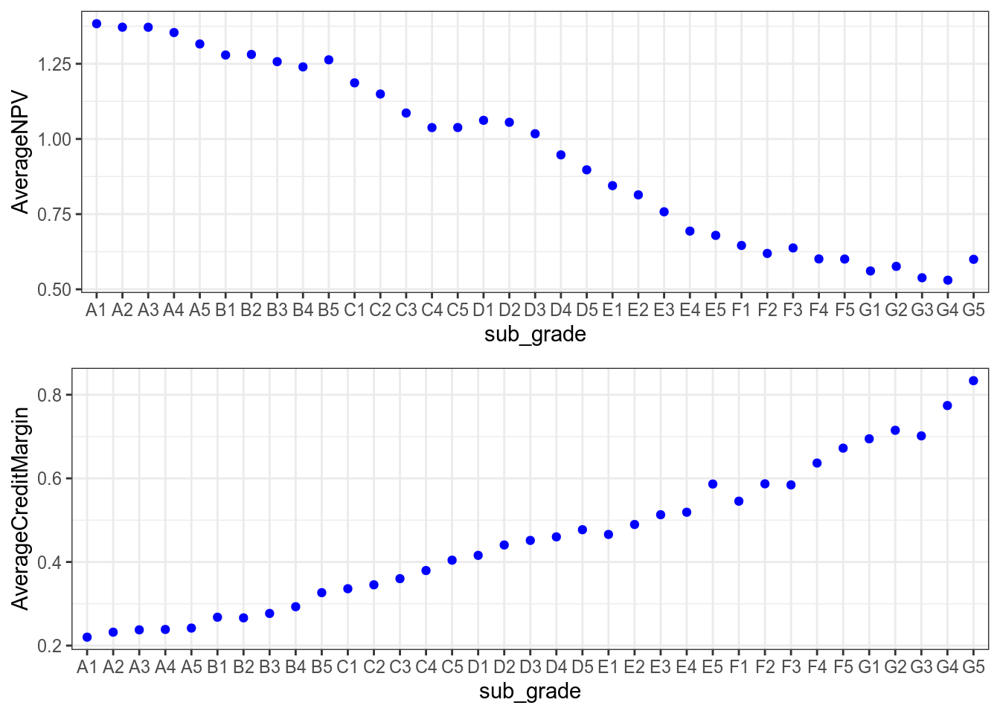
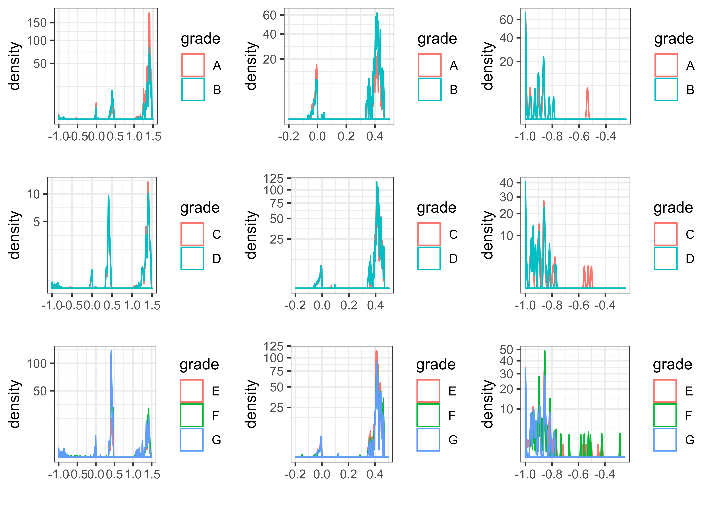

Chapter 3 Average NPV and credit margin by subgrade
Figure ?? shows that as ratings worsen, the average NPV14 expressed as a portion of the funded amount decreases. For the best quality loans, we see that the NPV exceeds 1.00 = 100%: at a risk-free rate, investors receive more than what is necessary to compensate for credit loss and can use the excess to cover additional costs mentioned in the Preamble. As ratings worsen, the NPV drops down to about 50%.
If loans were adequately priced, the excess returns (thanks to higher interest) should on average offset credit losses, that is an NPV average should be at least 100%. This seems to be the case down to ratings of about D4. Further down, credit losses become too frequent and/or too substantial to be covered on average. We posit that this justified rejecting loans applications rated E1 and below.

3.0.1 NPV distribution by rating
Figure ?? shows that for a given grade, the NPVs are very widely spread. From top to bottom, loans are group by ratings: from quality ratings of A and B, average ratings of C and D, to poor ratings of E and below. From left to right, we focus on different parts of how NPVs are distributed. Note that each graph is based on a random sample of 100,000 loans (about 1/12th of the original set) and therefore the NPV densities are comparable from graph to graph.

At the outset, column by column (where NPVs are on the same scale), the NPV distribution show several modes on the same location:
a mode with a maximum around 1.25 / 1.5 being loans seemingly repaid in full (the mode is above 100% given the repayment of principal and interest);
a second and third mode 50% and 0%;
one last very diffuse mode around -100%.
The modes are made more apparent by zooming on where the modes are present: the leftmost column basically shows the entire range of the NPVs (as portion of the loan). The middle graph zooms on the -20% / 50% range. The rightmost column zooms on the -100% / -25% section.
Looking at the left hand scale, we can see that the lower NPVs overall gain in importance as the loan rating worsen.
The overall trend is what we should expect. What is very surprising is the existence of (1) very clearly defined modes which (2) are common to all types of borrowers.
3.1 Variables
We here present other aspects of the dataset. The full list of variable is given in appendix (see Table ??). This dataset will be reduced as we focused on our core question: Are LC’s loans priced appropriately?.
3.1.1 Identification
The dataset is anonymised (all identifying ID numbers are deleted) and we therefore removed those columns from the dataset. Since the identification IDs have been removed to anonymise the dataset, we cannot see if a borrower borrowed several times.
3.2 Loan decision
As indicated in the introduction, our focus is on loans that have gone through their entire life cycle to consider their respective pricing, risk and profitability. To that effect, we will remove all loans which are still current (either performing or not), and we will only retain loans which currently available (rated A1 to D5). Another reason for limiting ourselves to this subset is that the previous subsection graphing NPVs strongly suggests that the lowest quality loans were very underpriced yielding average losses. From here on, everything will be based on this reduced dataset.
In this reduced dataset, we focus on loans that have matured or been terminated. It contains 1306356 samples. Most of the loans (ca.80%) have been repaid in full. See Table ??.
When grouped by grade (Figure 3.1), we see a clear correlation between grade and default: the lower the grade the higher the portion defaults (note the limited scale with a minimum at about 50%). In addition, most of the business is written in the B- or C-rating range.
Figure 3.1: Funding and Write-offs by Sub-grades
The averages are not weighted by loan amount since an investor can invest in $25 parcels. Weighting would have been appropriate if investors were instead forced to invest in the whole amount.↩